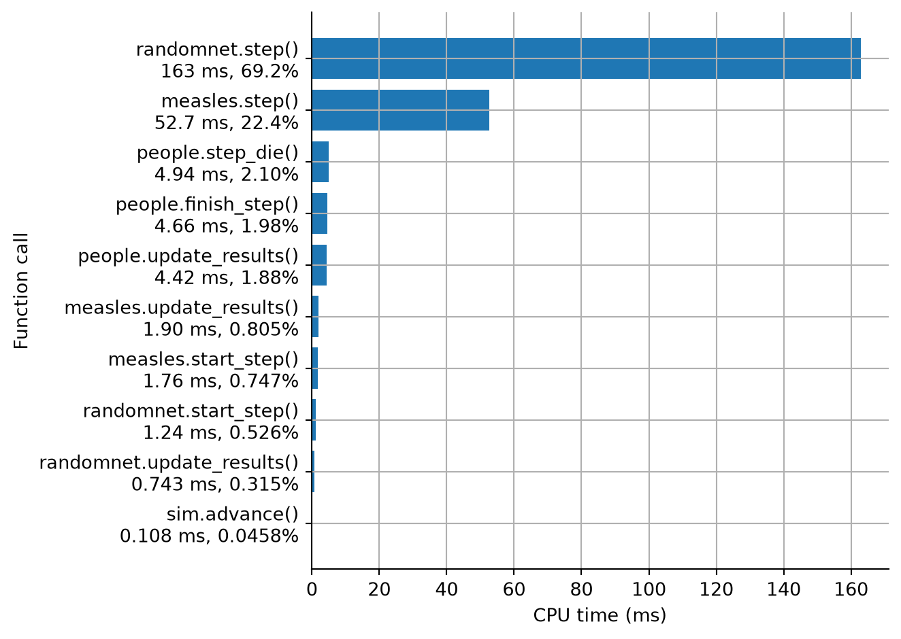

A model can go wrong in three ways: it stops with an error, it runs but gives an answer that looks wrong, or it runs too slowly. This page goes through the tools Starsim has for each, in roughly the order to reach for them, and then the mistakes that are known to catch people out, most of which don’t raise an error at all. Most of the examples use the measles model from the tutorials: an SIR with β = 1.9 per day and an infectious period of 8 days, so R0 = 1.9 × 8 ≈ 15.
import starsim as ssS, I, R = ss.states('S I R')infection = S >> I @1.9*I # β = 1.9 per dayrecovery = I >> R @ ss.days(8) # Infectious for 8 days on averagemeasles = ss.Disease(infection, recovery, init_prev=0.001)sim = ss.Sim(measles, total_pop=100_000, stop=ss.days(50))sim.run()
Sim: measles, 100,000 people, as an ODE, days 0 to 50
measles: R0 = 15.2, with 100 infectious at the start
Done in 0.0023 s; measles: 99,900 infections; at most 74,112 infectious, on day 6
Sim(n=100000; 0—50; diseases=measles)
Where to look first, by symptom:
Symptom
First checks
An error before the run starts
The message: it names the parameter, state, or module, and usually what to do
No epidemic
R0 in the first lines printed; where the initial infections are (init_prev seeds the first infected state, not necessarily an infectious one); a rate written where a duration was meant
An epidemic far too fast or too slow
Units of rates and durations; β per contact multiplied by a number of contacts; the time step (sim.check_dt())
The wrong population size
total_pop and n_agents; births, deaths, and migration; the number of people each agent stands for
A fit that looks wrong
Which result each data column is compared with, and over what period
Different results from run to run
The seed, the solver, changes to the model, versions of Starsim
A slow run
The number of agents, steps, and runs; then profiling
Errors and what a run prints
When Starsim can’t build or run a model, it raises an error that names what is wrong in the terms of the model, and says what to do about it. Here the parameter β is misspelled:
pars= has a value for "betta", which matches no parameter. Parameters are measles.beta, measles.dur_I; did you mean measles.beta?
Most errors are Python’s own: a KeyError for a name that is not found, as here, a TypeError for a value of the wrong kind, and a ValueError for the rest. The message is what says what went wrong, so search for it, or catch the error by its type as above. The few that code may want to catch by kind are classes of their own, such as ss.CapabilityError, raised when the solver asked for can’t run part of the model. Most mistakes are caught when the sim is built (sim.init(), which sim.run() calls first), before any time step is taken, so an error usually comes at once rather than after a long run.
A run prints what it is running and how, the R0 of each disease, any notes, and a closing line with the size and timing of the peak. Read these first: most surprises are explained there. A note is something Starsim assumed or noticed that is worth knowing, and doesn’t stop the run. For example, in an SEIR model, init_prev puts people in E, where a new infection starts, so nobody is infectious at first:
S, E, I, R = ss.states('S E I R')infection = S >> E @1.9*Ilatency = E >> I @ ss.days(10)recovery = I >> R @ ss.days(8)seir = ss.Disease(infection, latency, recovery, init_prev=0.001, name='measles')seir_sim = ss.Sim(seir, total_pop=100_000, stop=ss.days(100))seir_sim.run()
Sim: measles, 100,000 people, as an ODE, days 0 to 100
measles: R0 = 15.2, with 0 infectious at the start
Note: init_prev seeds E of "measles", where a new infection starts, so nobody is infectious at the start; to seed infectious people, use init=dict(I=...) (a share) or init_n= (a number)
Done in 0.0023 s; measles: 99,900 infections; at most 29,177 infectious, on day 33
Sim(n=100000; 0—100; diseases=measles)
The notes are kept in sim.notes, even when nothing is printed (verbose=0):
seir_sim.notes
["unit='day' (from the typed values in the model)",
'init_prev seeds E of "measles", where a new infection starts, so nobody is infectious at the start; to seed infectious people, use init=dict(I=...) (a share) or init_n= (a number)']
Some messages are warnings rather than notes: the run continues, but something probably needs attention (for example, a fitted parameter that ended at one of its bounds). To stop at the first warning instead, so that a script can’t carry on past one unnoticed, turn warnings into errors:
ss.options(warnings='error')
Checking the model
Starsim fills in whatever a model leaves out: the population size, the distribution of each duration, how people mix, the unit of time, and which solver to use. describe() lists the whole model as it was built, with each value that Starsim chose itself marked as guessed. If a result looks wrong, check here that the model is the one you meant:
sim.describe()
Sim 1 module, 100,000 people, days 0 to 50
solver
ode
guessed: every part of the model has a compartmental form
unit
day
from the typed values in the model
Disease 'measles' 3 states, 2 transitions
states
S, I, R
I infectious
init: init_prev = 0.001; the rest in S
infection
S -> I transmission, from I
beta = 1.9 per day
rate = 1.9 × I.n / N
homogeneous mixing
recovery
I -> R spontaneous
time in I ~ exponential(mean = 8 days)
guessed: scalar duration
Mixing and interventions
mixing
homogeneous, 1 contact per day
guessed: no network given
Results and running
results
S, I, R, and one flow per transition
schedule
every day: measles
Notes
note
unit='day' (from the typed values in the model)
equations() gives the same model as the equations of an ODE, which is often the quickest way to check that each rate is what you meant (for example, that a transmission is frequency-dependent, β S I / N, and not density-dependent, β S I):
measles.equations()
dS/dt = -beta * S * I / N
dI/dt = beta * S * I / N - I / dur_I
dR/dt = I / dur_I
When two sims that should agree don’t, compare what each says about itself: the describe() of each, side by side, shows where their states, transitions, parameters, and settings differ (and the code of each can be compared in a text editor). Here the second sim has a lower β and a shorter step:
S, I, R = ss.states('S I R')infection = S >> I @1.5*Irecovery = I >> R @ ss.days(8)other = ss.Disease(infection, recovery, init_prev=0.001, name='measles')other_sim = ss.Sim(other, total_pop=100_000, stop=ss.days(50), dt=ss.days(0.5), verbose=0)other_sim.describe()
Sim 1 module, 100,000 people, days 0 to 50
solver
ode
guessed: every part of the model has a compartmental form
unit
day
from the typed values in the model
Disease 'measles' 3 states, 2 transitions
states
S, I, R
I infectious
init: init_prev = 0.001; the rest in S
infection
S -> I transmission, from I
beta = 1.5 per day
rate = 1.5 × I.n / N
homogeneous mixing
recovery
I -> R spontaneous
time in I ~ exponential(mean = 8 days)
guessed: scalar duration
Mixing and interventions
mixing
homogeneous, 1 contact per day
guessed: no network given
Results and running
results
S, I, R, and one flow per transition
schedule
every 0.5 days: measles
Notes
note
unit='day' (from the typed values in the model)
Checking the numbers
A few numbers can be checked by hand. The run prints R0, which for an SIR is β × the infectious period; if it is far from what you expected, a rate or a duration is wrong, often in its units (see Rates, durations, and units below). In a closed population, the share of people ever infected depends only on R0 (it is about 80% for R0 = 2, and all but a few for measles), and the peak comes later the fewer people start infected.
Another check is to run the same model in another way. The ODE is the average course of the epidemic; run as agents, the model should follow it closely when there are many people, and differ by chance when there are few. A large difference that doesn’t shrink with more people points to the size of the time step, or to something in the model that only one of them does. Here the same model is run both ways, as the scenarios of ss.parallel():
With total_pop=100_000 and n_agents=20_000, each agent stands for five people, so the results of the two are on the same scale. The two reach about the same peak, but the agents reach it a few days later. With 20,000 agents and 20 infected at the start, that is not chance; the next section shows that it is the time step. Solvers and backends says when to expect the solvers to differ, and why.
Checking the time step
Agents, and stochastic compartmental models, take whole time steps: each step, people move between states with a probability worked out from the rates over that step. When the rates are high compared with the step (for measles, β = 1.9 per day against a step of 1 day), a smaller step can change the answer. sim.check_dt() runs the model with the step it has and with a step half as long, and shows how much each result changes:
Change in each result when the timestep goes from 1 to 0.5 days (largest difference, as a share of the largest value):
measles.infection 74.0% (peak 5384 → 6859)
measles.recovery 51.6% (peak 1707 → 1789)
measles.I 47.2% (peak 15681 → 15558)
measles.S 41.0% (peak 19980 → 19980)
measles.R 15.2% (peak 19890 → 19913)
Each line is the largest difference between the two runs at any time, as a share of the result’s largest value. The height of the peak of infectious people hardly changes, but the epidemic runs faster with the shorter step, so on a given day the counts differ by much more. The reason is that someone infected during a step can only infect others from the next step on: with R0 = 15 and an infectious period of 8 days, measles doubles in well under a day at first, so steps of a day hold it back. If the timing of the peak matters, use the smaller step (dt=ss.days(0.5)), and check again. For a stochastic run, part of each change is the difference between two runs, so a change of a few percent can be chance. (An ODE adjusts its own steps within each time step, so its results hardly depend on dt.)
Finding what changes a parameter
Interventions and connectors change parameters while the model runs. When a parameter doesn’t seem to have the value you expect, sim.what_modifies() lists everything that changes it:
These are mistakes that have actually caught people out, collected from questions, reviews, and tests in which modelers new to Starsim wrote models for tasks with known answers. Most of them don’t raise an error: the model runs and gives a wrong answer. Starsim prints a note for many of them. The examples use a version of the measles model with weekly reported cases (half of infections), made by a function so that each example starts afresh:
import starsim as ssdef make_measles(beta=1.9):""" The measles SIR of the tutorials, with weekly reported cases (half of infections) """ S, I, R = ss.states('S I R') infection = S >> I @ beta*I recovery = I >> R @ ss.days(8) cases = ss.outcome(0.5*infection)return ss.Disease(infection, recovery, cases, init_prev=0.001, name='measles')
Rates, durations, and units
A number after @ is a rate, not a duration.I >> R @ ss.days(8) means that people stay in I for 8 days on average, but I >> R @ 8 means that they leave at a rate of 8 per unit of time, so after an eighth of a day. Starsim notes when a duration comes out shorter than the time step, which is almost always this mistake:
S, I, R = ss.states('S I R')infection = S >> I @1.9*Irecovery = I >> R @8# Meant: 8 dayswrong = ss.Disease(infection, recovery, init_prev=0.001, name='measles')ss.Sim(wrong, total_pop=100_000, stop=ss.days(50)).run()
Sim: measles, 100,000 people, as an ODE, days 0 to 50
measles: R0 = 0.238, with 100 infectious at the start
Note: unit='day' (from start and stop)
Note: recovery has a mean dwell of 0.12 days, shorter than the step; a duration is written dur=, or ss.days(10)
Done in 0.0034 s; measles: 31 infections; at most 100 infectious, on day 0
Sim(n=100000; 0—50; diseases=measles)
R0 comes out at 0.24 instead of 15, and the outbreak never starts. Give a duration with its unit (ss.days(8)), or as dur= in ss.Transition(I, R, dur=ss.days(8)).
A plain number is in the sim’s unit of time. The unit is taken from the values that have one (here, ss.days(8)), and describe() says where it came from. Every plain number is then in that unit: β = 1.9 is per day, and so is stop. So stop=2, meant as two years, is two days:
Sim: measles, 100,000 people, as an ODE, days 0 to 2
measles: R0 = 15.2, with 100 infectious at the start
Done in 0.0016 s; measles: 3,486 infections; at most 3,352 infectious, on day 2
Sim(n=100000; 0—2; diseases=measles)
Give times with their units (stop=ss.years(2)), or as dates (start='2025-01-01', stop='2027-01-01'). If nothing in a model has a unit, time is counted in steps, and the run says “steps” where it would say “days”.
A number as a time is a year, or a time since the start. A number from 1900 on is a calendar year, as in start=2025: at=2026 is the start of 2026, and at=2026.5 the middle of it. Any other number is a time in the sim’s unit after the start, so at=30 means 30 days after the start of a sim in days (for 2,000 days, write ss.days(2000)). Starsim stops with an error when a time falls outside the sim:
a round of "vaccination" (2026) is outside the sim (2025-01-01 to 2025-07-01); a number from 1900 on is a calendar year, and any other number a time in the sim's unit (days) since the start.
A date within a year is written as a string: at='2025-02-01'.
A rate times a duration is not a rate. A rate of 0.1 per year times 3 days is the chance of an event over those 3 days, a plain number, not a rate. Starsim raises an error rather than guess what was meant:
S, I, R = ss.states('S I R')try: ss.Disease(S >> I @1.9*I, I >> R @ ss.peryear(0.1)*ss.days(3))exceptTypeErroras error:print(error)
the rate of the transition "I_to_R" is a plain number (a rate times a duration), not a rate:
rate = peryear(0.1) * days(3)
A rate times a duration is a probability over that duration, not a rate; give the rate itself, e.g. rate=ss.peryear(0.1).
Starting the epidemic
init_prev puts people where an infection starts, not where they are infectious. In an SIR model that is I, but in an SEIR model it is E, so nobody is infectious at the start and the epidemic starts a latent period late. The run says so:
S, E, I, R = ss.states('S E I R')infection = S >> E @1.9*Ilatency = E >> I @ ss.days(10)recovery = I >> R @ ss.days(8)seir = ss.Disease(infection, latency, recovery, init_prev=0.001, name='measles')ss.Sim(seir, total_pop=100_000, stop=ss.days(100)).run()
Sim: measles, 100,000 people, as an ODE, days 0 to 100
measles: R0 = 15.2, with 0 infectious at the start
Note: init_prev seeds E of "measles", where a new infection starts, so nobody is infectious at the start; to seed infectious people, use init=dict(I=...) (a share) or init_n= (a number)
Done in 0.0021 s; measles: 99,900 infections; at most 29,177 infectious, on day 33
Sim(n=100000; 0—100; diseases=measles)
To start people infectious, give the share in each state with init (init=dict(I=0.001)), or the number with init_n (init_n=dict(I=100)).
An ODE always takes off. An ODE is the average course of an epidemic, so if R0 is above 1 it takes off from any number of infected people, even a fraction of one. A real outbreak that starts with one or two cases dies out by chance quite often: with R0 = 3, a third of the chains of infection started by one case end without a major outbreak. Starsim notes this when a model starts with only a few infected:
S, I, R = ss.states('S I R')infection = S >> I @0.3*Irecovery = I >> R @ ss.days(10)sir = ss.Disease(infection, recovery, init_n=dict(I=2), name='sir')ss.Sim(sir, total_pop=100_000, stop=ss.days(200)).run()
Sim: sir, 100,000 people, as an ODE, days 0 to 200
sir: R0 = 3, with 2 infectious at the start
Note: "sir" starts with 2 infected, so whether it takes off is a matter of chance, which solver="ode" does not show; solver="gillespie" with ss.parallel(n_runs=...) does
Done in 0.0035 s; sir: 94,046 infections; at most 30,047 infectious, on day 58
Sim(n=100000; 0—200; diseases=sir)
To see how likely an outbreak is, run the model stochastically, many times (see Runs and chance).
Runs and chance
The median of many runs can hide that some died out. When some runs die out early and the rest have a large outbreak, the results are split in two, and a median or mean describes neither group. Here 20 runs of the model above, as agents, each start with two infected:
The median of sir_infection (the number of new infections over the run) is a large outbreak, but the low end of its interval is 0, and the mean is between the two: some runs died out before the two people infected at the start infected anyone. The infections in each run show the split directly:
When the question is whether there is an outbreak at all, count the runs with one, and summarize the size of the outbreak over those runs only. A single stochastic run is one possible outcome, and two scenarios compared with one run each can differ by chance alone; see Scenarios.
n_agents= runs the model as agents. Giving a number of agents asks for agents, so a model that would run as an ODE is run as agents instead, with the chance and time steps that come with them. To set the size of the population in a compartmental model, use total_pop=. With both, each agent stands for several people (total_pop=100_000, n_agents=10_000 makes each agent ten people), and the results are scaled to the whole population. describe() says which solver was chosen and why.
A time step can be too long for a fast disease. Agents and stochastic compartmental models take whole steps, and someone infected during a step can only infect others from the next one. For a disease that spreads as fast as measles, steps of a day slow the epidemic down by a few days. Starsim suggests a shorter step when transmission or leaving a state is fast compared with the step (and says which is fastest), and sim.check_dt() shows how much a smaller step changes the results; see Checking the time step above.
Mixing and stratification
With contacts, β is per contact. Without a network or contact matrix, everyone mixes with everyone, and β is the rate at which a susceptible person is infected per unit of the share infectious (as if each person had one contact a day). With a contact matrix, β is the chance of infection per contact, so R0 is multiplied by the number of contacts. Adding a contact matrix with about 15 contacts a day to the measles model, with β left at 1.9, gives an R0 of about 210:
Sim: measles, 100,000 people, as an ODE, days 0 to 50
measles: R0 = 214, with 100 infectious at the start
Done in 0.0033 s; measles: 99,900 infections; at most 91,233 infectious, on day 1
Sim(n=100000; 0—50; diseases=measles)
When contacts are added to a model, scale β down to keep the same R0; here, β = 0.12 per contact gives R0 ≈ 14. describe() says what β is per (beta on contacts: 1.9 per day per contact).
stratify() changes the disease itself. It works in place, and returns the disease too. Run the same notebook cell twice and the second stratify() does nothing (with a note); stratify the same disease again by the same property in a different way, and it raises an error, since its states are already split:
"measles" is already stratified by "age", in another way. stratify() works in place, so the stratification can be given once; to change it, build the model again.
To try several stratifications, build the disease again each time, as make_measles() does here.
Interventions
Vaccines are leaky unless told otherwise. A vaccine with efficacy=0.9 reduces each vaccinated person’s chance of infection by 90% (a leaky vaccine). A vaccine that fully protects 90% of those vaccinated and does nothing for the rest (all or nothing) is leaky=False. For a disease that spreads as fast as measles, the difference is large: a leaky vaccine only slows infection, and with an R0 of 15, many vaccinated people are infected in the end. Here 90% of people are vaccinated at the start with each kind:
Measles vaccine protection is close to all or nothing, as are many live vaccines; choose the kind that matches the evidence for the vaccine being modeled.
Data
Data is matched to results by name. A column of data is compared with the result of the same name, so a column called reported is not compared with the result cases. When a sim is built, Starsim notes a column that matches no result, and sim.fit() stops with an error:
truth = ss.Sim(make_measles(), total_pop=100_000, stop=ss.days(50), rand_seed=2, verbose=0).run()data = truth.to_data('cases', resample='week')data = data.rename(columns={'cases': 'reported'}) # As it might come from elsewheress.Sim(make_measles(), data=data, total_pop=100_000, stop=ss.days(50)).init()
Sim: measles, 100,000 people, as an ODE, days 0 to 50
measles: R0 = 15.2, with 100 infectious at the start
Note: The data column "reported" matches no result. The closest results are recovery, R, cases.
Rename it with ss.simdata(..., aliases=dict(recovery='reported')), or drop it with ss.simdata(..., ignore_extra=True). It is not compared with the results.
Sim(n=100000; 0—50; diseases=measles)
Rename the column to match the result (data.rename(columns={'reported': 'cases'})), or say which result it is: data=ss.simdata(data, aliases=dict(cases='reported')).
Counts over a period are compared with totals over the same period. A result that counts events, such as infections or reported cases, is compared with the data as its total since the previous data point, so weekly data is compared with weekly totals, whatever the model’s time step. A result that counts people at a time, such as the number infectious, is compared at the time of each data point. Data on prevalence (people infectious at a time) given as a count of events, or the other way round, fits the wrong thing; check which kind each column is. Fitting a model has more on data.
Looking inside a run
A model run as agents, or one with modules written as code, is run one step at a time, and within each step the modules are run in a fixed order: the loop. sim.loop.to_df() lists every call in it, in order, for the whole run; the first rows are the start and the first step:
agent_sim.run()agent_sim.loop.to_df().head(13)
time
ti
func_order
label
module
func_name
cpu_time
0
0.0
0
6
people.update_results
people
update_results
NaN
1
0.0
0
7
measles.update_results
measles
update_results
NaN
2
1.0
1
0
sim.advance
sim
advance
NaN
3
1.0
1
1
sim.start_step
sim
start_step
NaN
4
1.0
1
2
measles.start_step
measles
start_step
NaN
5
1.0
1
3
measles.step_state
measles
step_state
NaN
6
1.0
1
4
measles.step
measles
step
NaN
7
1.0
1
5
people.step_die
people
step_die
NaN
8
1.0
1
6
people.update_results
people
update_results
NaN
9
1.0
1
7
measles.update_results
measles
update_results
NaN
10
1.0
1
8
people.finish_step
people
finish_step
NaN
11
1.0
1
9
sim.finish_step
sim
finish_step
NaN
12
2.0
2
0
sim.advance
sim
advance
NaN
To see what happens during a run, a function of the sim can be inserted into the loop, after (or, with before=True, before) any call in it. Here it prints the number infectious every ten days, just after the disease has taken its step:
Day 10 infectious: 14832
Day 20 infectious: 4331
Day 30 infectious: 1275
Day 40 infectious: 368
Day 50 infectious: 110
Sim(n=20000; 0—50; diseases=measles)
A function given as an analyzer (analyzers=show_infectious) does the same without touching the loop, but always runs last in the step; inserting it gives control over where. For anything more than a quick look, use an analyzer, which runs at the end of each step and can keep results of its own. Breakpoints and print statements in a module written as code work as in any Python program. A compartmental model that Starsim runs whole (an ODE with nothing that needs to happen between steps) has no loop to look into; inserting a function or adding an analyzer makes it run one step at a time, with the same results, and describe() says so (under plan).
sim.loop.plot() draws the loop as a diagram, which is most useful when modules have time steps of their own (demographics once a year and a disease once a week, say), to see which runs when. sim.run_one_step() takes a single step, for stepping through a run by hand in a debugger.
Profiling
Compartmental models run in well under a second, so profiling is mostly for models run as agents, especially with networks or modules written as code. Start with how long each part of each step takes: run with profile=True, and plot the time spent in each call of the loop:
big = ss.Sim(measles, n_agents=50_000, networks=ss.RandomNet(n_contacts=10), stop=ss.days(50), verbose=0)big.run(profile=True)big.loop.plot_cpu()

Here the network (randomnet.step, which pairs people up afresh each day) takes a large share of the time, as much as the disease. To see which lines of a function take the time, follow it with sim.profile(), which runs a copy of the sim with a line-by-line profiler on the functions given:
big = ss.Sim(measles, n_agents=50_000, networks=ss.RandomNet(n_contacts=10), stop=ss.days(50), verbose=0)prof = big.profile(follow=ss.RandomNet.add_pairs, plot=False)prof.disp(maxentries=5)
Profiling 1 function(s):
<function RandomNet.add_pairs at 0x753edc1ca7a0>
Elapsed time: 0.213 s
———————————————————————————————————————————————————————————————
Profile of networks.RandomNet.add_pairs: 0.0868468 s (40.8466%)
———————————————————————————————————————————————————————————————
Total time: 0.0868468 s
File: /home/cliffk/idm/ssv4/starsim/networks.py
Function: RandomNet.add_pairs at line 968
Line # Hits Time Per Hit % Time Line Contents
==============================================================
968 def add_pairs(self):
969 """ Generate edges """
970 50 66075.0 1321.5 0.1 p = self.pars
971 50 30906.0 618.1 0.0 people = self.sim.people
972 50 9176279.0 183525.6 10.6 uids = self.eligible(p.age_range).uids
973 50 222363.0 4447.3 0.3 current = len(self)
974 50 988633.0 19772.7 1.1 n_conn = self.same_contacts(len(uids), current)
975 50 26683.0 533.7 0.0 if n_conn is None:
976 if isinstance(p.n_contacts, ss.Dist):
977 n_conn = p.n_contacts.rvs(uids)
978 else:
979 n_conn = np.full(len(people), p.n_contacts)
980
981 # See how many new edges we need
982 orig = n_conn.sum()
983 target = orig / 2 # Divide by 2 since bi-directional
984 needed = target - current
985 if needed <= 0:
986 return
987 n_conn = n_conn*needed/orig
988 n_conn = p.n_contacts.randround(n_conn) # CRN-safe stochastic integer rounding
989
990 # Get the new edges -- the key step
991 50 62798643.0 1.26e+06 72.3 p1, p2 = self.pair(uids, n_conn)
992 50 136890.0 2737.8 0.2 if p.remove_self_loops:
993 keep = p1 != p2 # One pass over the new edges; finding duplicates would need a sort of all of them
994 p1, p2 = p1[keep], p2[keep]
995 50 40074.0 801.5 0.0 n = len(p1)
996 50 6746598.0 134932.0 7.8 beta = np.full(n, self.pars.beta, dtype=ss_float)
997
998 50 217107.0 4342.1 0.2 if isinstance(p.dur, ss.Dist):
999 dur = p.dur.rvs(p1)
1000 50 779681.0 15593.6 0.9 elif p.dur == 0:
1001 50 3956261.0 79125.2 4.6 dur = np.zeros(n, dtype=ss_float) # In its dtype (half the memory of float64), as validate() would make it
1002 else:
1003 dur = np.ones(n)*(p.dur/self.t.dt)
1004
1005 # Use zero-copy view for UIDs and skip concatenation when network is empty
1006 50 93068.0 1861.4 0.1 p1 = p1.view(ss.uids)
1007 50 44506.0 890.1 0.1 p2 = p2.view(ss.uids)
1008 50 23204.0 464.1 0.0 if current == 0:
1009 50 628886.0 12577.7 0.7 self.edges.p1 = p1
1010 50 311175.0 6223.5 0.4 self.edges.p2 = p2
1011 50 294222.0 5884.4 0.3 self.edges.beta = beta
1012 50 246728.0 4934.6 0.3 self.edges.dur = dur
1013 else:
1014 self.append(p1=p1, p2=p2, beta=beta, dur=dur)
1015 50 18830.0 376.6 0.0 return
———————————————————————————————————————————————————————————————
Profile of networks.RandomNet.add_pairs: 0.0868468 s (40.8466%)
———————————————————————————————————————————————————————————————
Total time: 0.0868468 s
File: /home/cliffk/idm/ssv4/starsim/networks.py
Function: RandomNet.add_pairs at line 968
Line # Hits Time Per Hit % Time Line Contents
==============================================================
968 def add_pairs(self):
969 """ Generate edges """
970 50 66075.0 1321.5 0.1 p = self.pars
971 50 30906.0 618.1 0.0 people = self.sim.people
972 50 9176279.0 183525.6 10.6 uids = self.eligible(p.age_range).uids
973 50 222363.0 4447.3 0.3 current = len(self)
974 50 988633.0 19772.7 1.1 n_conn = self.same_contacts(len(uids), current)
975 50 26683.0 533.7 0.0 if n_conn is None:
976 if isinstance(p.n_contacts, ss.Dist):
977 n_conn = p.n_contacts.rvs(uids)
978 else:
979 n_conn = np.full(len(people), p.n_contacts)
980
981 # See how many new edges we need
982 orig = n_conn.sum()
983 target = orig / 2 # Divide by 2 since bi-directional
984 needed = target - current
985 if needed <= 0:
986 return
987 n_conn = n_conn*needed/orig
988 n_conn = p.n_contacts.randround(n_conn) # CRN-safe stochastic integer rounding
989
990 # Get the new edges -- the key step
991 50 62798643.0 1.26e+06 72.3 p1, p2 = self.pair(uids, n_conn)
992 50 136890.0 2737.8 0.2 if p.remove_self_loops:
993 keep = p1 != p2 # One pass over the new edges; finding duplicates would need a sort of all of them
994 p1, p2 = p1[keep], p2[keep]
995 50 40074.0 801.5 0.0 n = len(p1)
996 50 6746598.0 134932.0 7.8 beta = np.full(n, self.pars.beta, dtype=ss_float)
997
998 50 217107.0 4342.1 0.2 if isinstance(p.dur, ss.Dist):
999 dur = p.dur.rvs(p1)
1000 50 779681.0 15593.6 0.9 elif p.dur == 0:
1001 50 3956261.0 79125.2 4.6 dur = np.zeros(n, dtype=ss_float) # In its dtype (half the memory of float64), as validate() would make it
1002 else:
1003 dur = np.ones(n)*(p.dur/self.t.dt)
1004
1005 # Use zero-copy view for UIDs and skip concatenation when network is empty
1006 50 93068.0 1861.4 0.1 p1 = p1.view(ss.uids)
1007 50 44506.0 890.1 0.1 p2 = p2.view(ss.uids)
1008 50 23204.0 464.1 0.0 if current == 0:
1009 50 628886.0 12577.7 0.7 self.edges.p1 = p1
1010 50 311175.0 6223.5 0.4 self.edges.p2 = p2
1011 50 294222.0 5884.4 0.3 self.edges.beta = beta
1012 50 246728.0 4934.6 0.3 self.edges.dur = dur
1013 else:
1014 self.append(p1=p1, p2=p2, beta=beta, dur=dur)
1015 50 18830.0 376.6 0.0 return
The function names are those of the code actually run, which for an inherited method is the class that defines it (a module that inherits its step() from ss.Infection shows as Infection.step). The same works for a method of a module you wrote, which is where the time usually goes in a slow model: a loop over people in Python, where an operation on the whole array would do. sim.cprofile() profiles every function the run calls, which is useful when you don’t yet know where to look. Only functions called during the run can be followed this way; for anything else, such as the building of the sim, use sc.profile() from Sciris directly.
When the time is in your own code, the usual remedies, roughly in order of how much they help:
Work on arrays, not people. A loop over agents in Python is a hundred times slower than the same operation on the whole array (disease.I[uids] = True, (age > 15).uids); see Array indexing.
Compile a loop that can’t be written as array operations with @ss.jit (see Custom modules).
Use fewer agents. Many questions are answered as well with each agent standing for several people (see Branching and rescaling), or without agents at all: a declared model that needs no individuals runs as compartments, in milliseconds (see Solvers and backends).
Record less. Analyzers that store something for every agent at every step, and very long runs with short steps, use memory and time.
A fit runs the model thousands of times, so a model that takes a second becomes a fit that takes hours: profile the model first, then see Fitting a model for making the fit itself cheaper.
Asking for help
If none of this finds the problem, cut it down to the smallest script that shows it (a small population, a short run, one disease, no data files) and ask on the Starsim GitHub issues, with the script, what it printed, and what you expected; see How to contribute.
Further reading
line_profiler: the line-by-line profiler behind sim.profile()